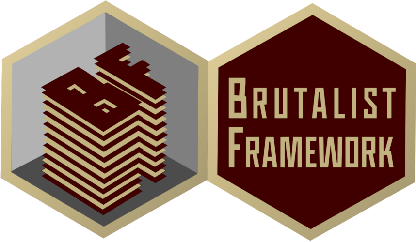

Boilerplates are static HTML templates that utilize the CORE components to construct starting points to assist in rapid prototyping.
These basic boilerplates are simple starter templates ideal for miscellaneous projects.
Commerce boilerplates are starter templates ideal for ecommerce projects.
Marketing boilerplates are starter templates ideal for landing pages.
Social boilerplates are starter templates ideal for community projects.
Experimental boilerplates are starter templates ideal for creative projects.